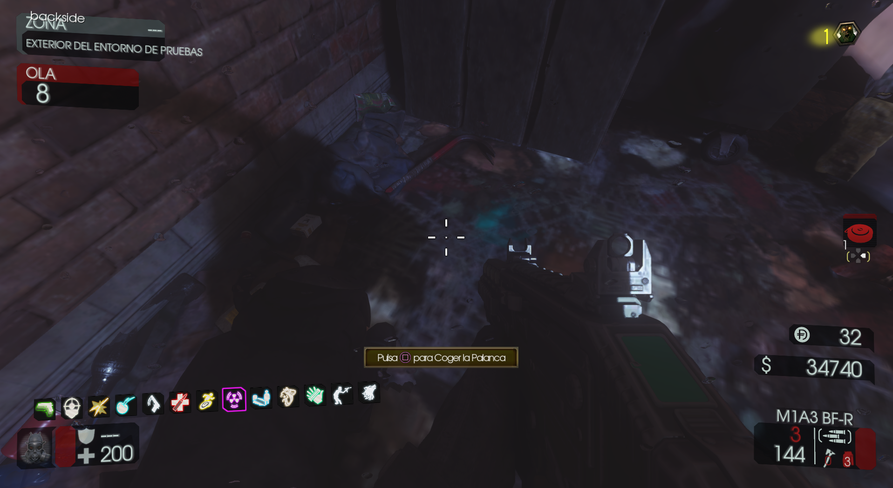

Requisitos:
Comprar las minas en la pared fuera de Electricidad y tener las llaves de la taquilla de Electricidad.
Entraremos a la Policía y después de abrir esta puerta, pondremos una mina que activará un zombie para abrirla completamente.
Podremos ver la PPSH en una vitrina que no podemos abrir aún.
El siguiente paso es esperar a que aparezca un zombie de fuego y dirigir uno de sus ataques a la telaraña del exterior entre los Terminales y la refinería de Agua.
Cuando la destruya podremos obtener la palanca.

Volveremos a la sala de la PPSH y ya podremos abrirla.